Мета та поставновка задачі
Тема: ВЗАЄМОДІЯ WEB-ЗАСТОСУВАНЬ З СИСТЕМОЮ КЕРУВАННЯ БАЗАМИ ДАНИХ (СКБД). ОБРОБКА РЕЗУЛЬТАТІВ SQL-ЗАПИТІВ У PHP-СЦЕНАРІЇ.
Мета: придбати практичні навички підключення до СКБД, вибора бази даних, виконання запиту, отримання результатів, відключення від СКБД
ХІД ВИКОНАННЯ РОБОТИ
1. У звітному HTML-документі розмістити тему та постановку задачі лабораторної роботи №8.
2. Розробити остаточну структуру бази даних вашого власного сайту.
3. Завантажити ПК «Денвер» або «Open Server» або той програмний комплекс, який був встановлений
на попередніх лабораторних роботах.
4. Створити повну інфологічну модель БД вашого власного сайту. Зробити опис цієї моделі: класифікацію
сутностей, атрибутів, обмеження цілостності.
5. Побудувати повну датологічну модель вашого власного сайту. Описати всі зв’зки цієї моделі. Виконати
нормалізацію БД вашого власного сайту (третя нормальна форма)
6. Реалізувати БД в СУБД MySQL використовуючи веб-інтерфейс для роботи із сервером MySQL phpMyAdmin.
7. Написати скрипти на PHP для внесення даних до БД, виведення даних на екран та для пошуку даних в БД
вашого власного сайту.
8. Створити SQL-запити до БД, які будуть відображувати повний функціонал роботи вашого власного сайту.
9. Результати виконання запитів ( взяти на свій розсуд) записати у текстовий файл.
10. Виконати авторизацію.На головній сторінці створити форму з такими елементами: логін та пароль
( при необхідності можна добавити інші елементи)
11. Реалізувати прийом даних цієї форми та відображення переданої інформації
12. Записати усі передані дані у сесію. Реалізувати заповнення значень форми на головній сторінці значеннями,
які зберігаються у формі. Тобто, щоб при переході на головну сторінку елементи форми заповнилися тими
значеннями, які збережені у сесії.
13. На головній сторінці додати іконки для вибору мови:
(кількість мов взяти на свій розсуд, але не менше трьох)
14. Кожну іконку обернути у посилання вигляду: index.php?lang=ukr і реалізуйте у файлі index.php обробник
GET-запиту з вибраною мовою.( або надати свій варіант) Вибрану мову записати у кукі-змінну з часом життя
півроку і при відображенні файла index.php реалізувати читання кукі-змінної і виведення фрази вигляду:
Вибрана мова: Українська (або англійська, або російська)
15. Оформити висновки
Остаточна структура бази даних
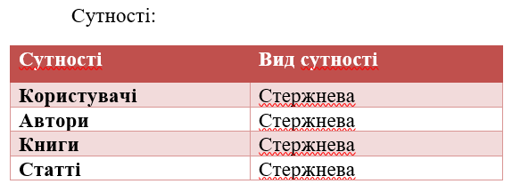
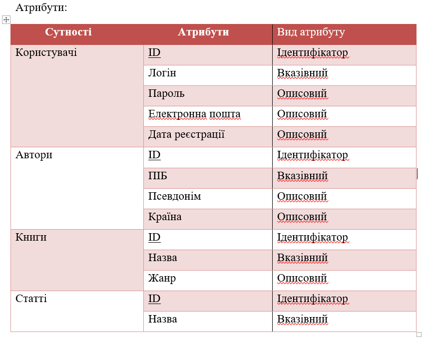
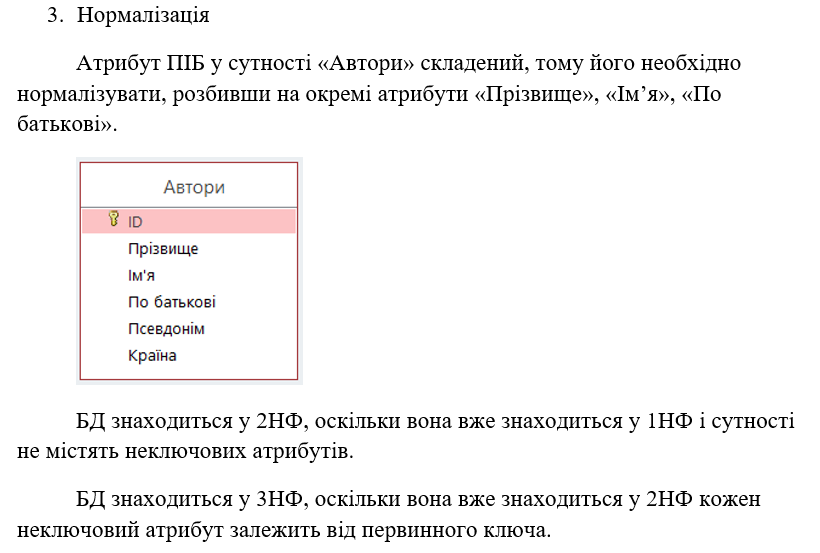
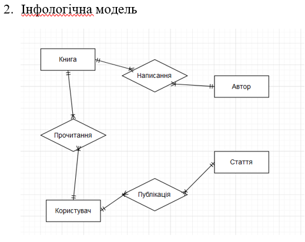
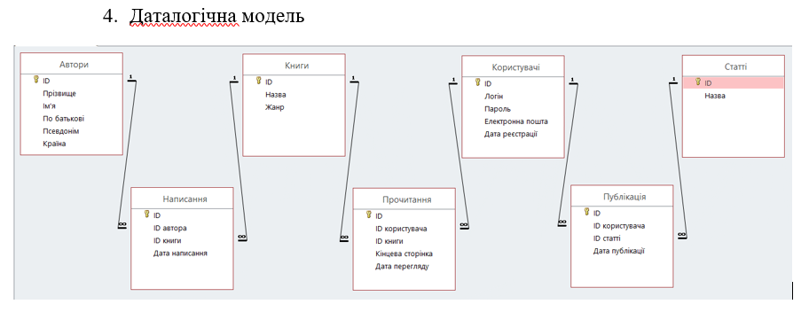
Пошук
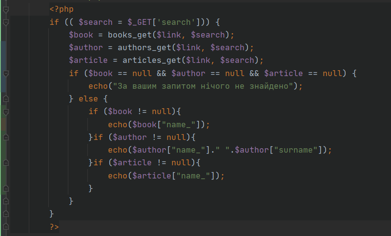Реєстрація та авторизація
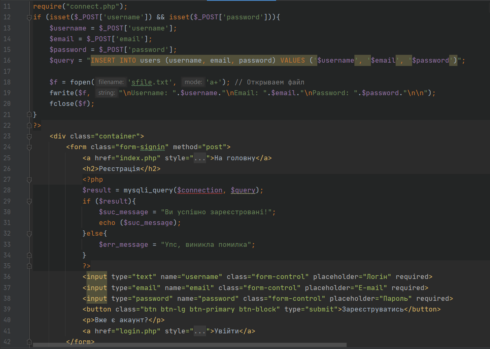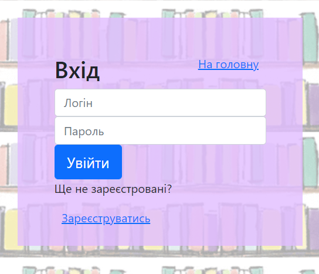
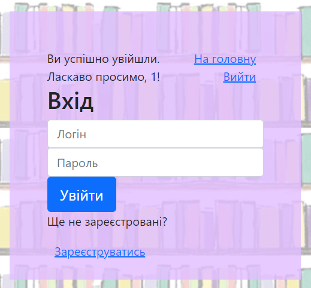
Сесія
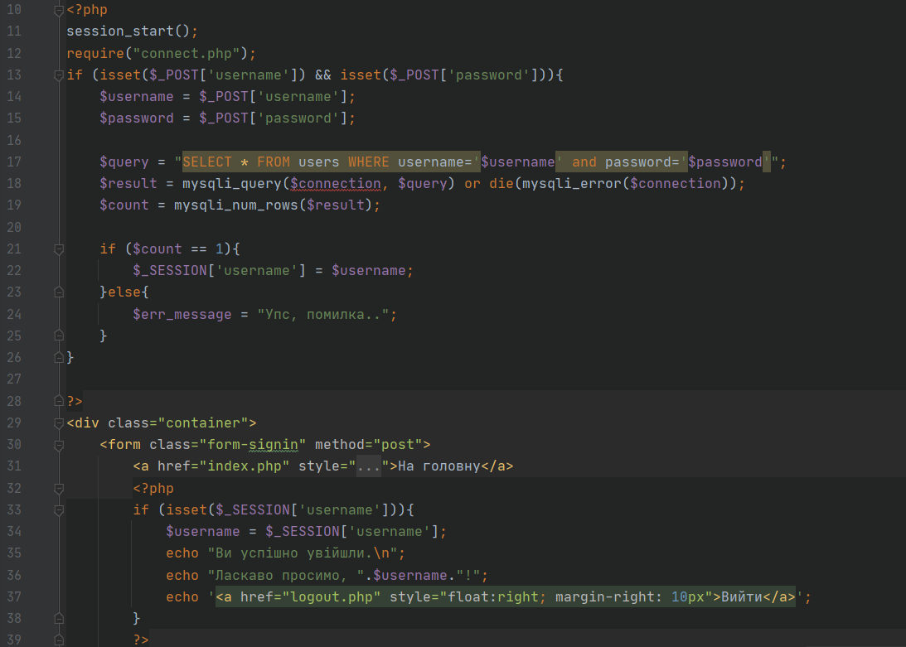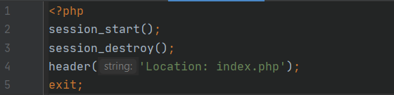
SQL запити
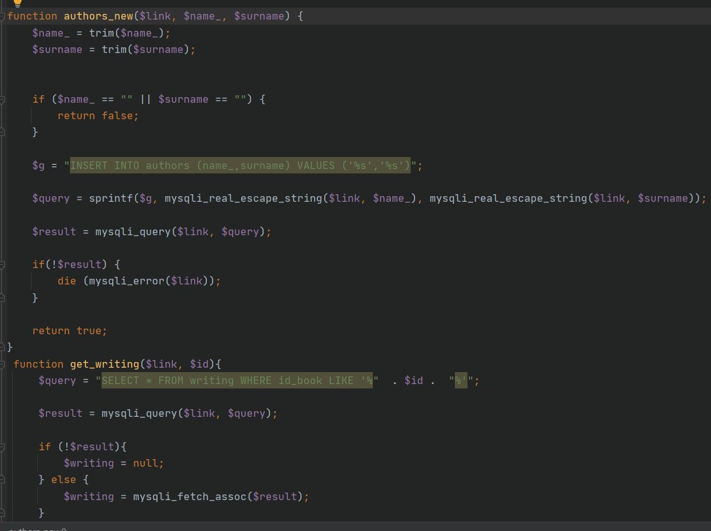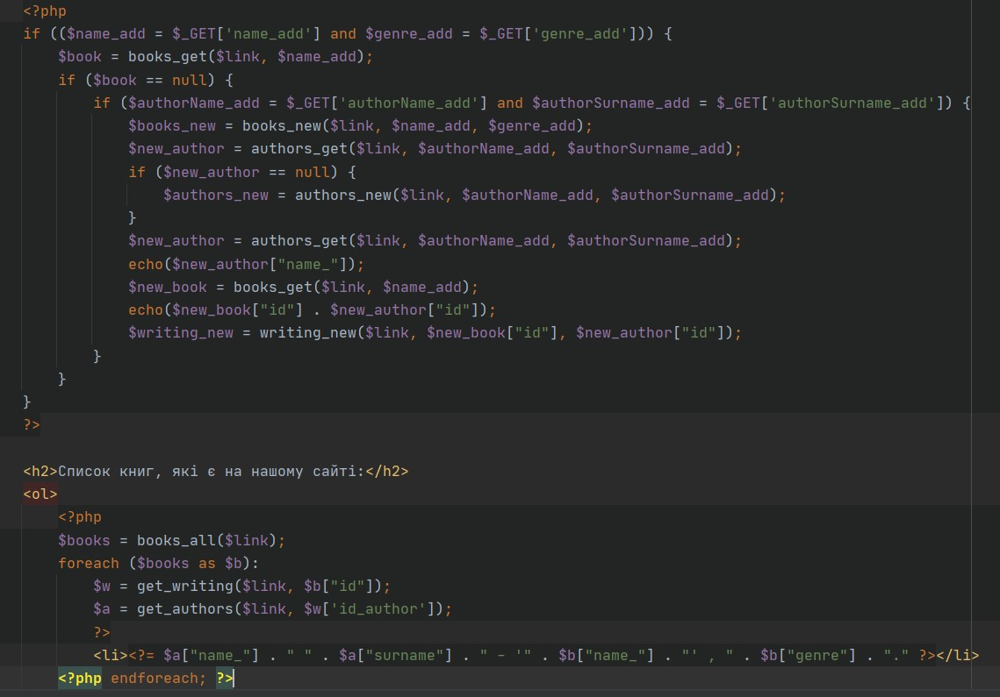
Вибір мови
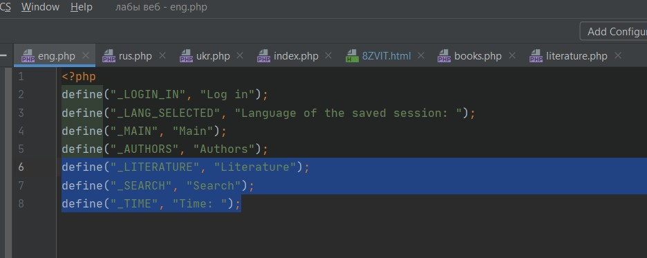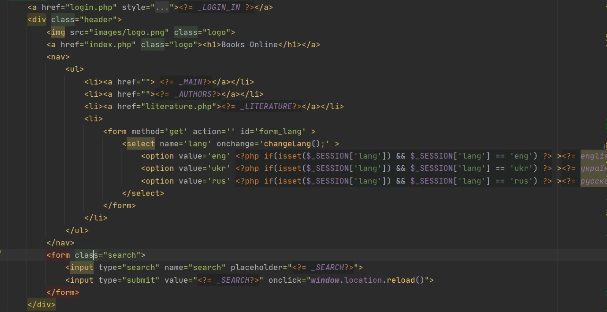
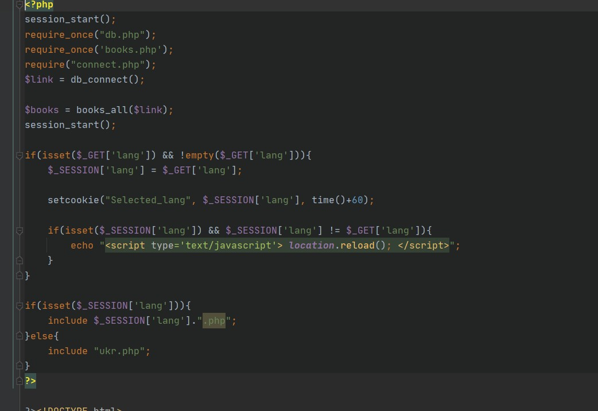
Висновок
На даній лабораторній ми навчилися додавати користувачів до бази даних через форми, зробивши реєстрацію, авторизацію і для цього використовували сесію. Також реалізували функціонал, пов'язаний із нашою базою даних, та додали вибір мови відображення змісту нашого сайту.